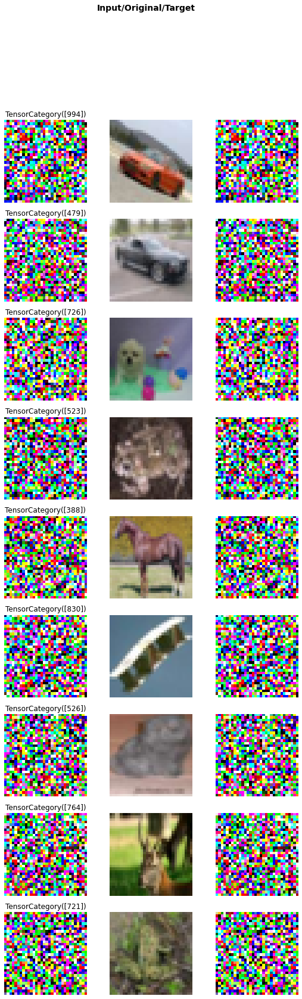
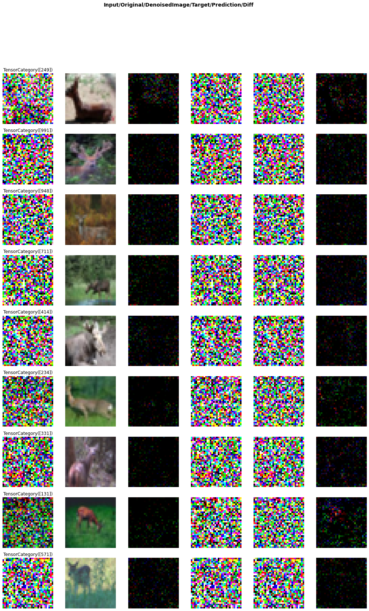
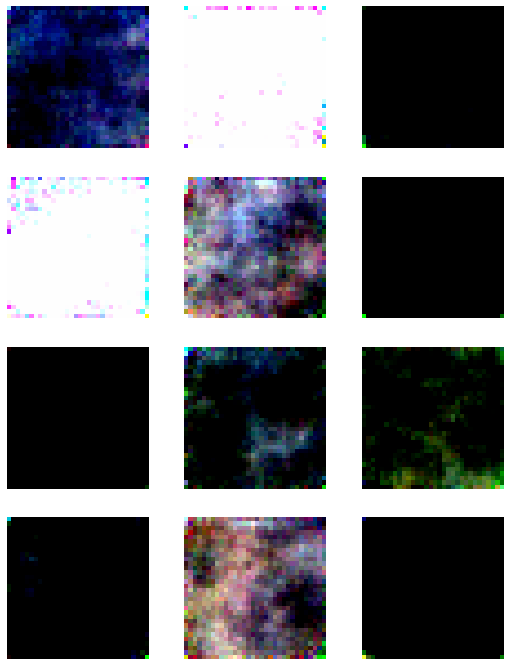
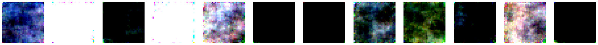

from fastai.basics import *
from fastai.vision.models.unet import *
from fastai.vision.all import *
from fastai.torch_basics import *
from denoising_diffusion_pytorch import Unetdiffusion
import wandb
wandb.init(reinit=True)
from fastai.callback.wandb import *Failed to detect the name of this notebook, you can set it manually with the WANDB_NOTEBOOK_NAME environment variable to enable code saving.
wandb: Currently logged in as: marii. Use `wandb login --relogin` to force relogin
wandb version 0.13.4 is available! To upgrade, please run:
$ pip install wandb --upgrade
Tracking run with wandb version 0.12.21
Run data is saved locally in
/home/molly/Projects/quatro-blog/posts/diffusion/wandb/run-20221006_011034-nhpww4wt
def gather(consts: torch.Tensor, t: torch.Tensor):
"""Gather consts for $t$ and reshape to feature map shape"""
c = consts.gather(-1, t)
return c.reshape(-1, 1, 1, 1)class DenoiseDiffusion:
"""
## Denoise Diffusion
"""
def __init__(self, eps_model: nn.Module, n_steps: int, device: torch.device):
"""
* `eps_model` is $\textcolor{lightgreen}{\epsilon_\theta}(x_t, t)$ model
* `n_steps` is $t$
* `device` is the device to place constants on
"""
super().__init__()
self.eps_model = eps_model
# Create $\beta_1, \dots, \beta_T$ linearly increasing variance schedule
self.beta = torch.linspace(0.0001, 0.02, n_steps).to(device)
# $\alpha_t = 1 - \beta_t$
self.alpha = 1. - self.beta
# $\bar\alpha_t = \prod_{s=1}^t \alpha_s$
self.alpha_bar = torch.cumprod(self.alpha, dim=0)
# $T$
self.n_steps = n_steps
# $\sigma^2 = \beta$
self.sigma2 = self.beta
def q_xt_x0(self, x0: torch.Tensor, t: torch.Tensor) -> Tuple[torch.Tensor, torch.Tensor]:
"""
#### Get $q(x_t|x_0)$ distribution
\begin{align}
q(x_t|x_0) &= \mathcal{N} \Big(x_t; \sqrt{\bar\alpha_t} x_0, (1-\bar\alpha_t) \mathbf{I} \Big)
\end{align}
"""
# [gather](utils.html) $\alpha_t$ and compute $\sqrt{\bar\alpha_t} x_0$
mean = gather(self.alpha_bar, t) ** 0.5 * tensor(x0)
# $(1-\bar\alpha_t) \mathbf{I}$
var = 1 - gather(self.alpha_bar, t)
#
return mean, var
def q_sample(self, x0: torch.Tensor, t: torch.Tensor, eps: Optional[torch.Tensor] = None):
"""
#### Sample from $q(x_t|x_0)$
\begin{align}
q(x_t|x_0) &= \mathcal{N} \Big(x_t; \sqrt{\bar\alpha_t} x_0, (1-\bar\alpha_t) \mathbf{I} \Big)
\end{align}
"""
# $\epsilon \sim \mathcal{N}(\mathbf{0}, \mathbf{I})$
if eps is None:
eps = torch.randn_like(x0)
# get $q(x_t|x_0)$
mean, var = self.q_xt_x0(x0, t)
# Sample from $q(x_t|x_0)$
return mean + (var ** 0.5) * eps
def p_sample(self, xt: torch.Tensor, t: torch.Tensor):
"""
#### Sample from $\textcolor{lightgreen}{p_\theta}(x_{t-1}|x_t)$
\begin{align}
\textcolor{lightgreen}{p_\theta}(x_{t-1} | x_t) &= \mathcal{N}\big(x_{t-1};
\textcolor{lightgreen}{\mu_\theta}(x_t, t), \sigma_t^2 \mathbf{I} \big) \\
\textcolor{lightgreen}{\mu_\theta}(x_t, t)
&= \frac{1}{\sqrt{\alpha_t}} \Big(x_t -
\frac{\beta_t}{\sqrt{1-\bar\alpha_t}}\textcolor{lightgreen}{\epsilon_\theta}(x_t, t) \Big)
\end{align}
"""
# $\textcolor{lightgreen}{\epsilon_\theta}(x_t, t)$
# NOTEDDDD REMOVED t
eps_theta = self.eps_model(xt,t)
# [gather](utils.html) $\bar\alpha_t$
alpha_bar = gather(self.alpha_bar, t)
# $\alpha_t$
alpha = gather(self.alpha, t)
# $\frac{\beta}{\sqrt{1-\bar\alpha_t}}$
eps_coef = (1 - alpha) / (1 - alpha_bar) ** .5
# $$\frac{1}{\sqrt{\alpha_t}} \Big(x_t -
# \frac{\beta_t}{\sqrt{1-\bar\alpha_t}}\textcolor{lightgreen}{\epsilon_\theta}(x_t, t) \Big)$$
mean = 1 / (alpha ** 0.5) * (xt - eps_coef * eps_theta)
# $\sigma^2$
var = gather(self.sigma2, t)
# $\epsilon \sim \mathcal{N}(\mathbf{0}, \mathbf{I})$
eps = torch.randn(xt.shape, device=xt.device)
# Sample
return mean + (var ** .5) * epsclass Q_sample(ItemTransform):
order=101
def __init__(self,diffusion):
self.diffusion=diffusion
def encodes(self,xy):
x=xy[0]
y=xy[-1]
ts = xy[2][:,0]#torch.randint(0, self.diffusion.n_steps, (x.shape[0],), device=x.device, dtype=torch.long)
x_type=type(x)
x=self.diffusion.q_sample(x, x_type(ts), eps=y)
return (x,*xy[1:-1],y)class LabelToNoise(ItemTransform):
order=100
def encodes(self,xy):
y=xy[-1]
return (*xy[:-1],retain_type(torch.randn(y.shape,device=y.device),old=y))def sample():
"""
### Sample images
"""
with torch.no_grad():
# $x_T \sim p(x_T) = \mathcal{N}(x_T; \mathbf{0}, \mathbf{I})$
x = torch.randn([n_samples, image_channels, 32, 32],
device=device)
# Remove noise for $T$ steps
for t_ in range(n_steps):
# $t$
t = n_steps - t_ - 1
# Sample from $\textcolor{lightgreen}{p_\theta}(x_{t-1}|x_t)$
x = diffusion.p_sample(x, x.new_full((n_samples,), t, dtype=torch.long))
return xn_steps=1000path = untar_data(URLs.MNIST)
path = untar_data(URLs.CIFAR)m=Unet(dim=32,channels=3)#UnetTime(img_channels=1,dims=[32, 64, 128, 256, 256],ks=3,stem_stride=2).cuda()@typedispatch
def show_batch(x:tuple, y:TensorImage, samples, ctxs=None, max_n=10, nrows=None, ncols=None, figsize=None, **kwargs):
if ctxs is None: ctxs = get_grid(3*min(len(samples), max_n), nrows=nrows, ncols=3, figsize=figsize, title='Input/Original/Target')
ctxs[0::3] = [b.show(ctx=c, **kwargs) for b,c,_ in zip(samples.itemgot(0),ctxs[0::3],range(max_n))]
ctxs[0::3] = [b.show(ctx=c, **kwargs) for b,c,_ in zip(samples.itemgot(2),ctxs[0::3],range(max_n))]
ctxs[1::3] = [b.show(ctx=c, **kwargs) for b,c,_ in zip(samples.itemgot(1),ctxs[1::3],range(max_n))]
ctxs[2::3] = [b.show(ctx=c, **kwargs) for b,c,_ in zip(samples.itemgot(3),ctxs[2::3],range(max_n))]
return ctxsdiffusion = DenoiseDiffusion(m,n_steps,torch.device(0))
dls=DataBlock((ImageBlock(cls=PILImageBW),
ImageBlock(cls=PILImageBW),
TransformBlock(type_tfms=[DisplayedTransform(enc=lambda o: TensorCategory(o),dec=Category)]),
ImageBlock(cls=PILImageBW)),
n_inp=3,
item_tfms=[Resize(32)],
batch_tfms=(Normalize.from_stats(0.5,1.),LabelToNoise,Q_sample(diffusion)),
get_items=get_image_files,
get_x=[lambda x:x,lambda x:x,
lambda x: torch.randint(0, n_steps, (1,), dtype=torch.long)],
splitter=GrandparentSplitter(train_name='training', valid_name='testing'),
).dataloaders(path,bs=128,val_bs=2*128)
dls.show_batch()IndexError: list index out of rangepath.ls()(#3) [Path('/home/molly/data/cifar10/labels.txt'),Path('/home/molly/data/cifar10/test'),Path('/home/molly/data/cifar10/train')]bs=128
diffusion = DenoiseDiffusion(m,n_steps,torch.device(0))
dls=DataBlock((ImageBlock(),
ImageBlock(),
TransformBlock(type_tfms=[DisplayedTransform(enc=lambda o: TensorCategory(o),dec=Category)]),
ImageBlock()),
n_inp=3,
item_tfms=[Resize(32)],
batch_tfms=(Normalize.from_stats(0.5,1.),LabelToNoise,Q_sample(diffusion)),
get_items=get_image_files,
get_x=[lambda x:x,lambda x:x,
lambda x: torch.randint(0, n_steps, (1,), dtype=torch.long)],
splitter=IndexSplitter(range(bs)),
).dataloaders(path,bs=bs,val_bs=2*bs)
dls.show_batch()
class FlattenCallback(Callback):
def before_batch(self):
self.learn.xb=(self.xb[0],self.xb[-1].view(self.xb[-1].shape[::2]),)learn = Learner(dls,m,MSELossFlat(),opt_func=Lamb,cbs=[FlattenCallback,WandbCallback(log_preds_every_epoch=True)])inp=m.layers0:0 inp.seq_dict[‘t’]=torch.tensor([5]).cuda() m.layers1:4.shape
learn.fit_flat_cos(6,lr=1e-4,wd=0.)| epoch | train_loss | valid_loss | time |
|---|---|---|---|
| 0 | 0.699252 | 0.648226 | 01:58 |
| 1 | 0.375051 | 0.354264 | 01:54 |
| 2 | 0.185453 | 0.168021 | 01:52 |
| 3 | 0.102715 | 0.080112 | 01:53 |
| 4 | 0.064207 | 0.043586 | 01:56 |
| 5 | 0.055305 | 0.053669 | 01:52 |
WandbCallback was not able to get prediction samples -> Match length mismatch@typedispatch
def show_results(x:tuple, y:TensorImage, samples, outs, ctxs=None, max_n=10, figsize=None, **kwargs):
if ctxs is None: ctxs = get_grid(6*min(len(samples), max_n), ncols=6, figsize=figsize, title='Input/Original/DenoisedImage/Target/Prediction/Diff')
ctxs[0::6] = [b.show(ctx=c, **kwargs) for b,c,_ in zip(samples.itemgot(0),ctxs[0::6],range(max_n))]
ctxs[1::6] = [b.show(ctx=c, **kwargs) for b,c,_ in zip(samples.itemgot(1),ctxs[1::6],range(max_n))]
ctxs[0::6] = [b.show(ctx=c, **kwargs) for b,c,_ in zip(samples.itemgot(2),ctxs[0::6],range(max_n))]
ctxs[2::6] = [(b-o).show(ctx=c, **kwargs) for b,o,c,_ in zip(samples.itemgot(0),outs.itemgot(0),ctxs[2::6],range(max_n))]
ctxs[3::6] = [b.show(ctx=c, **kwargs) for b,c,_ in zip(samples.itemgot(3),ctxs[3::6],range(max_n))]
ctxs[4::6] = [b.show(ctx=c, **kwargs) for b,c,_ in zip(outs.itemgot(0),ctxs[4::6],range(max_n))]
ctxs[5::6] = [(b-targ).show(ctx=c, **kwargs) for b,targ,c,_ in zip(outs.itemgot(0),samples.itemgot(3),ctxs[5::6],range(max_n))]
return ctxslearn.show_results()Clipping input data to the valid range for imshow with RGB data ([0..1] for floats or [0..255] for integers).
Clipping input data to the valid range for imshow with RGB data ([0..1] for floats or [0..255] for integers).
Clipping input data to the valid range for imshow with RGB data ([0..1] for floats or [0..255] for integers).
Clipping input data to the valid range for imshow with RGB data ([0..1] for floats or [0..255] for integers).
Clipping input data to the valid range for imshow with RGB data ([0..1] for floats or [0..255] for integers).
Clipping input data to the valid range for imshow with RGB data ([0..1] for floats or [0..255] for integers).
Clipping input data to the valid range for imshow with RGB data ([0..1] for floats or [0..255] for integers).
Clipping input data to the valid range for imshow with RGB data ([0..1] for floats or [0..255] for integers).
Clipping input data to the valid range for imshow with RGB data ([0..1] for floats or [0..255] for integers).
Clipping input data to the valid range for imshow with RGB data ([0..1] for floats or [0..255] for integers).
Clipping input data to the valid range for imshow with RGB data ([0..1] for floats or [0..255] for integers).
Clipping input data to the valid range for imshow with RGB data ([0..1] for floats or [0..255] for integers).
Clipping input data to the valid range for imshow with RGB data ([0..1] for floats or [0..255] for integers).
Clipping input data to the valid range for imshow with RGB data ([0..1] for floats or [0..255] for integers).
Clipping input data to the valid range for imshow with RGB data ([0..1] for floats or [0..255] for integers).
Clipping input data to the valid range for imshow with RGB data ([0..1] for floats or [0..255] for integers).
Clipping input data to the valid range for imshow with RGB data ([0..1] for floats or [0..255] for integers).
Clipping input data to the valid range for imshow with RGB data ([0..1] for floats or [0..255] for integers).
n_samples=12
image_channels=3
diffusion = DenoiseDiffusion(m,n_steps,torch.device(0))
device=torch.device(0)
xs = sample()show_images((logit((xs.repeat(1,3,1,1)-xs.repeat(1,3,1,1).mean())/xs.repeat(1,3,1,1).std()).sigmoid()),nrows=4)show_images((logit((xs-xs.mean())/xs.std()).sigmoid()),nrows=4)
xs.min()show_images(xs)Clipping input data to the valid range for imshow with RGB data ([0..1] for floats or [0..255] for integers).
Clipping input data to the valid range for imshow with RGB data ([0..1] for floats or [0..255] for integers).
Clipping input data to the valid range for imshow with RGB data ([0..1] for floats or [0..255] for integers).
Clipping input data to the valid range for imshow with RGB data ([0..1] for floats or [0..255] for integers).
Clipping input data to the valid range for imshow with RGB data ([0..1] for floats or [0..255] for integers).
Clipping input data to the valid range for imshow with RGB data ([0..1] for floats or [0..255] for integers).
Clipping input data to the valid range for imshow with RGB data ([0..1] for floats or [0..255] for integers).
Clipping input data to the valid range for imshow with RGB data ([0..1] for floats or [0..255] for integers).
Clipping input data to the valid range for imshow with RGB data ([0..1] for floats or [0..255] for integers).
Clipping input data to the valid range for imshow with RGB data ([0..1] for floats or [0..255] for integers).
Clipping input data to the valid range for imshow with RGB data ([0..1] for floats or [0..255] for integers).
Clipping input data to the valid range for imshow with RGB data ([0..1] for floats or [0..255] for integers).
with learn.removed_cbs(WandbCallback):
show_images(dls.one_batch()[0][:4])learn.show_results??dls.show_batch(show=False)[2]@typedispatch
def wandb_process(x:tuple, y, samples, outs, preds):
"Process `sample` and `out` depending on the type of `x/y`"
res_input, res_pred, res_label = [],[],[]
for s,o in zip(samples, outs):
img = s[0].permute(1,2,0)
res_input.append(wandb.Image(img, caption='Input_data'))
for t, capt, res in ((o[0], "Prediction", res_pred), (s[1], "Ground_Truth", res_label)):
fig, ax = _make_plt(img)
# Superimpose label or prediction to input image
ax = img.show(ctx=ax)
ax = t.show(ctx=ax)
res.append(wandb.Image(fig, caption=capt))
plt.close(fig)
return {"Inputs":res_input, "Predictions":res_pred, "Ground_Truth":res_label}learn.show_results()%debug::: {.cell 0=‘h’ 1=‘i’ 2=‘d’ 3=‘e’}
from nbdev import nbdev_export
nbdev_export():::